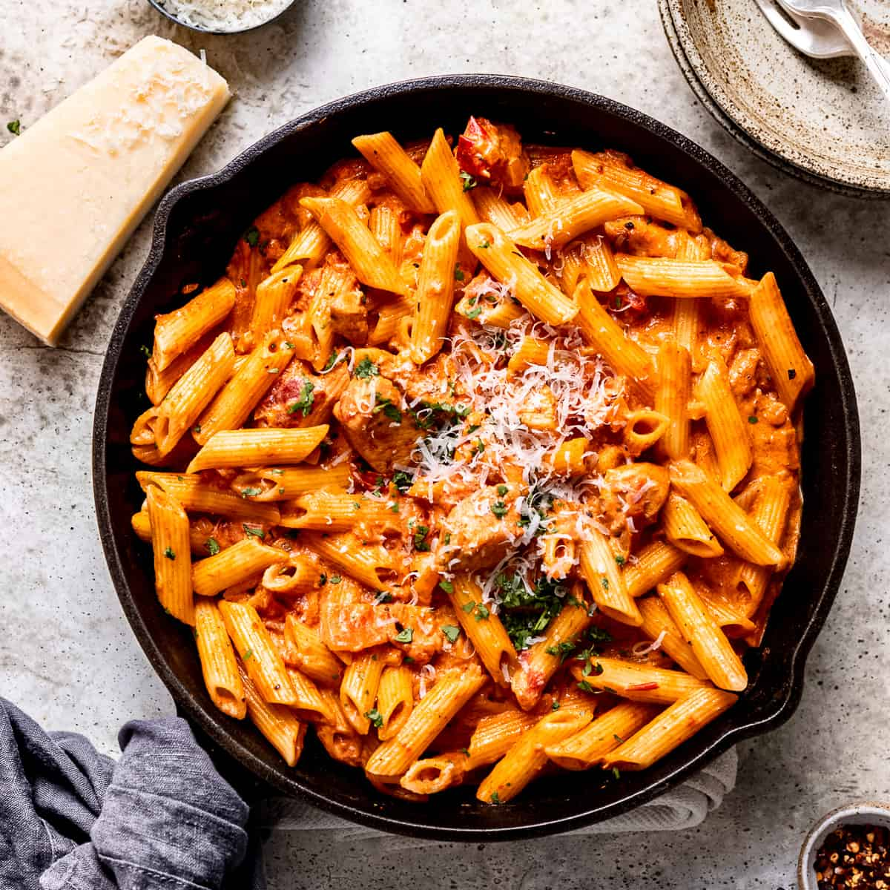

Creamy Cajun Chicken Pasta

Description
This Cajun chicken pastais a easy 30 minute recipe that only uses a
a handful of ingredients. With tender chunks of chicken, a creamy and
spicy sauce, and a hint of lemon, this dish is perfect for busy weeknights
Flavorful Spice Mix: The Cajun seasoning provides a perfect balance of heat and flavor, making the dish bold and delicious.
Creamy Sauce: The cream adds a rich and velvety texture that complements the spiciness of the Cajun seasoning.
Versatile Protein: Using chicken breast or thighs offers flexibility, allowing you to choose based on your preference for leaner or juicier meat.
Simple Preparation: The recipe requires minimal steps and common ingredients, making it easy to prepare even on busy weeknights.
Customizable: You can easily adjust the spice level and add different vegetables or proteins to suit your taste.
Ingredients
- Olive oil
- Cajun spice
- Chicken breast or thighs
- Garlic
- Brown onion
- Chopped tomatoes
- Single cream
- Lemon juice
- Penne or any pasta
- Coriander
- Parmesan cheese
Steps
- Prepare the Chicken: Chop the chicken into 2.5 cm cubes and toss with 2 tablespoons of Cajun spice. Heat the oil in a high-sided skillet over medium-high heat. Once hot, add the chicken and cook until golden and cooked through. Remove the chicken from the skillet and set aside.
- Make the Sauce: In the same skillet, add the garlic and onion. Sauté gently until the garlic is fragrant and the onion is translucent. Add a splash of water if needed to deglaze the pan. Pour in the chopped tomatoes and the remaining tablespoon of Cajun spice. Bring to a simmer and cook for 5 minutes.
- Finish the Sauce: Pour in the cream and stir well. Add half of the lemon juice and taste. Add the remaining lemon juice if you prefer a brighter sauce. Return the chicken to the pan and cook until heated through.
- Combine with Pasta: Cook the pasta according to package instructions. Drain and add to the sauce, stirring well to coat the pasta evenly. Mix in the chopped coriander.
- Serve: Serve the pasta topped with grated Parmesan cheese.